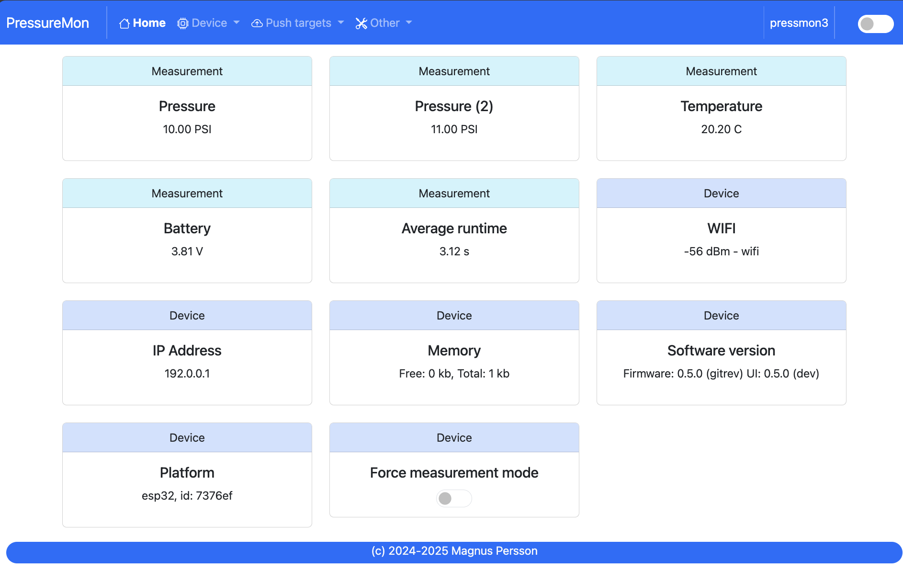

Functionality¶
The main features¶
Operates in two modes measurement or configuration mode
In
measurement modeit behaves wakes up and perform the measurements and sends the data to the defined services. This will only work when the device is battery operatedIn
configuration modethe device is always active and the webserver is active. Here you can view the pressure/temperature values, change configuration. When in configuration mode the device will also perform the measurements and send data to defined services. There are options for forcing the device into configuration mode, one is secure the battery is outside the range for the measurement mode. You can also force it by connecting the GPIO pins that are reserved for that or force it via the web interface.Can send data to multiple endpoints
This software will push data to all defined endpoints so in theory you can use them all. However this will consume more battery power so use only as many as needed. Its much more efficient to have the endpoints on your local network than on the internet.
Currently the device supports the following endpoints.
http (ssl optional)
influxdb v2 (ssl optional)
MQTT (ssl optional)
Other servies can be easily added based on the format template editor.
Under the Service Integration section you can find guides for how to connect PressureMon to extenal services.
The software support SSL endpoints but currently without CA validation, this means that the data is encrypted but it does not validate if the remote endpoint is who it claims to be.
if you require CA validation please leave a comment on GitHub and I will make that a priority. Adding this function will dramatically reduce the battery life of the device.
Multiple Bluetooth data tranmission options
Bluetooth is an option for those boards that have that feature.
Pressmon iBeacon. Data: Pressure,Temp,Battery,ChipID.
WIFI Direct to GravityMon Gateway (Work in progress)
This works in combination with the GravityMon Gateway that will act as an Access Point (AP) and receive data from GravityMon and then forward it to the right destination. The Gateway works with both BLE and WIFI. This works only in measurement mode and will force the device to connect to the closest defined AP with the best reception.
Note! This feature is work in progress and is not yet implemented in the Gateway.
Customize the data format being sent to push targets
In order to make it easier to support more targets there is a built in format editor that can be used to customize the data that is to be sent. This way you can easily adapt the software to new targets without coding. If you have a good template please share it on the github repository and I will add it to the documentation for other users to enjoy. See the Format Templates for more information. See Service Integration for a list of services currently validated.
Validation of common configuration errors
Common configuration errors or hardware problems will now be displayed on the front page. The following are checked:
No pressure sensor connected
No push targets defined
Skip sleep mode setting
No temperature sensor connected
Battery voltage out of range
Backup and Restore of settings
All the configuration of the device can be exported and stored as a text file (json). This can be used to restore settings in case of hardware problems. You can also create a template of your settings and use that on multiple devices. Just make sure to change the “id” fields to match your device id (can be found on the index page).
DS18B20 temperature adjustments
You can adjust the temperature reading of the temperature sensor. In normal cases this should not be needed since the sensors should be calibrated.
WIFI connection issues
The software will not wait indefinitely for a wifi connection. If it takes longer than 20 seconds to connect then the device will try the secondary wifi configuration, and that also fails it will go into deep sleep for 60 seconds and then retry later. This to conserve batter as much as possible.
Celsius or Fahrenheit
You can switch between different temperature formats. GravityMon will always use C for it’s internal calculations and convert to F when displayed.
PSI, Bar or kPA
You can switch between different pressure formats. PressureMon will always use PSI for it’s internal calculations and convert to other formats when displayed.
Battery saving
If the battery voltage drops below 20%, then the device will enter battery savings mode and change the sleep interval to 1 hour.
Custom board support
There are lots of boards out there that can support a pressure monitor and now there is a possibility to add custom builds for boards that I dont have access to, in sense a community approach where everyone can add new boards that can be supported. See: Custom boards
{kind=link}
Battery life¶
TODO: This section will need to be updated once data has been collected.
Performance¶
TODO: This section will need to be updated once data has been collected.